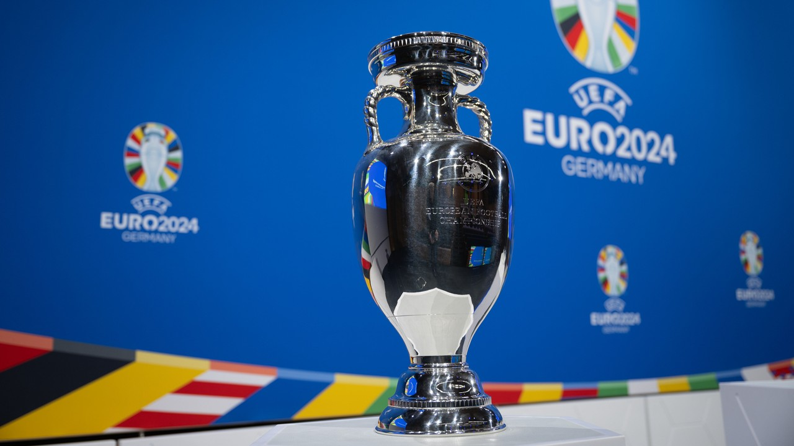
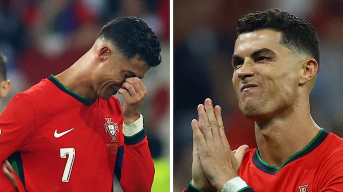

Euro 2024
This is where you'll find the latest news, updates, and commentary on Euro 2024.
European Championship 2024
The 2024 UEFA European Football Championship, commonly referred to as UEFA Euro 2024 (stylised as UEFA EURO 2024) or simply Euro 2024, was the 17th UEFA European Championship, the quadrennial international football championship organised by UEFA for the European men's national teams of their member associations. Germany hosted the tournament, which took place from 14 June to 14 July 2024. The tournament involved 24 teams, with Georgia making their European Championship debut.
It was the third time that European Championship matches were played on German territory, and the second time in reunified Germany, as West Germany hosted the 1988 tournament, and four matches of the multi-national Euro 2020 were played in Munich. It was the first time the competition was held in what was formerly East Germany, with Leipzig as a host city, as well as the first major tournament since the 2006 FIFA World Cup that Germany served as a solo host nation. The tournament returned to its usual four-year cycle after the 2020 edition was postponed to 2021 due to the COVID-19 pandemic.
Italy were the defending champions, having won the 2020 final against England on penalties, but were eliminated in the round of 16 by Switzerland. Host nation Germany were eliminated by Spain in the quarter-finals; Spain went on to win the tournament for a record fourth time after defeating England 2–1 in the final.
Not the ideal farewell for Cristiano?
Have football fans seen the last of Cristiano Ronaldo in the Portugal shirt? The team's departure from Euro 2024 at the quarter-final stage has had many wondering if Ronaldo would hang up his boots at the international stage after the tournament. Ronaldo didn't look at his best the entire tournament and even failed to register a single goal before the team's exit. However, a report has claimed that Ronaldo isn't willing to quit international football just yet. In fact, he is determined to play in the 2026 FIFA World Cup and bring the trophy home.
Ronaldo had an insipid Euro 2024 campaign that saw him contribute little to the team's goals. Portugal reached the quarter-finals of the tournament, thanks to their goalkeeper Diogo Costa's heroics in the penalty shootout after Ronaldo missed a penalty, putting the team in danger of elimination.